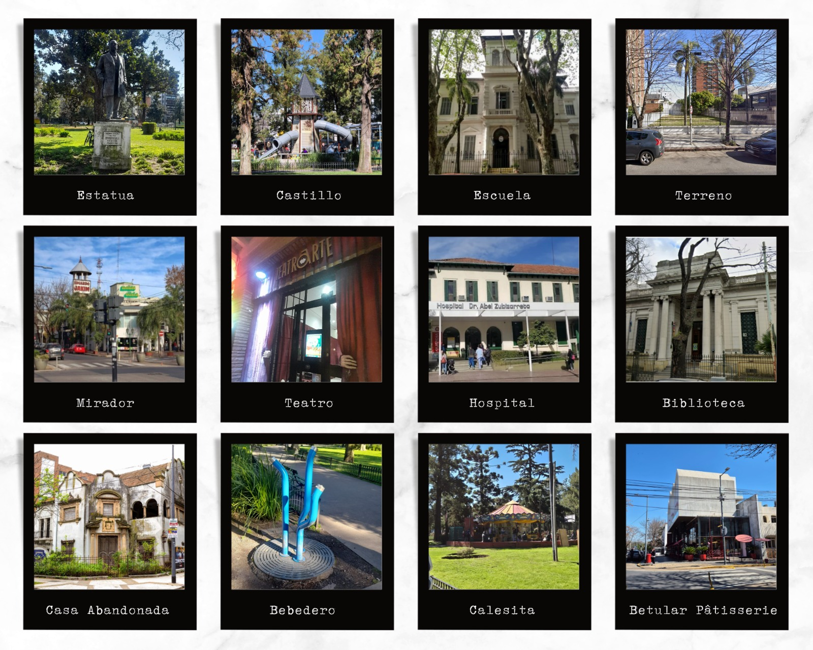
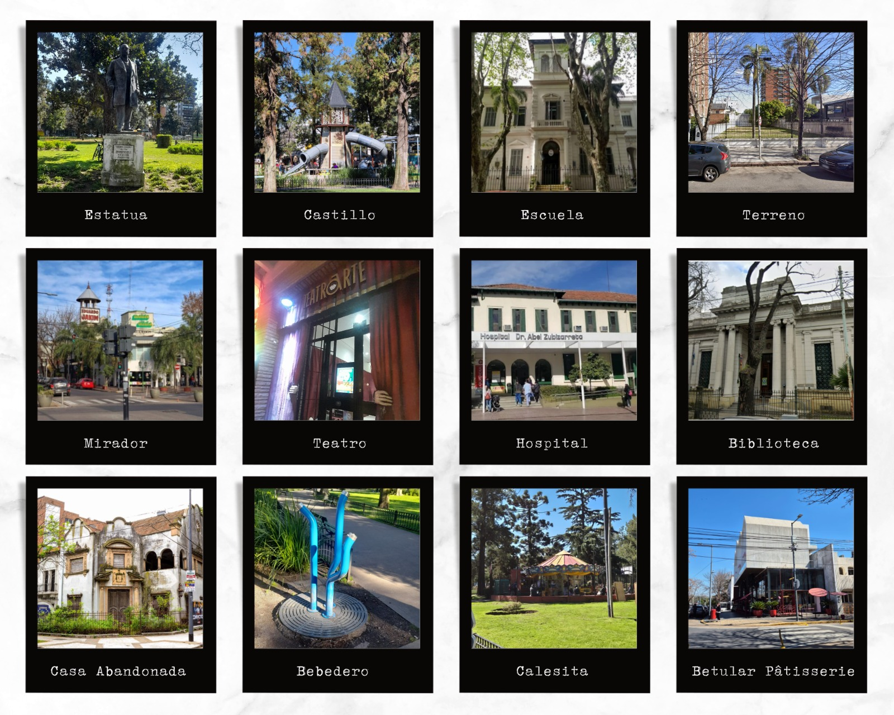
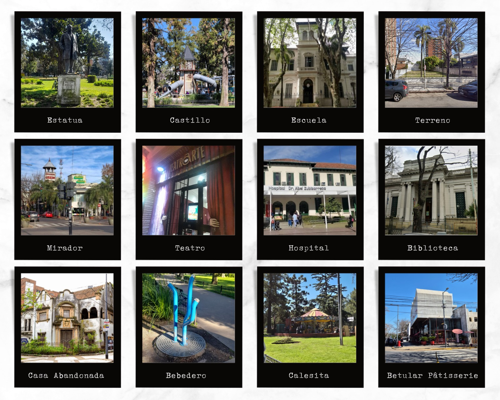

Menú
Inicio
Calendario
Nosotras
Galería
Proyectos
Recorrido Visual - Catalina Carou
Prueba de Color - Catalina Carou
Edición y Montaje - Florencia Ayelén Picco

Hitos de la Deriva - Florencia Ayelén Picco
×
 Recorrido Visual - Catalina Carou
Recorrido Visual - Catalina Carou
 Prueba de Color - Catalina Carou
Prueba de Color - Catalina Carou
 Edición y Montaje - Florencia Ayelén Picco

Hitos de la Deriva - Florencia Ayelén Picco
Edición y Montaje - Florencia Ayelén Picco

Hitos de la Deriva - Florencia Ayelén Picco